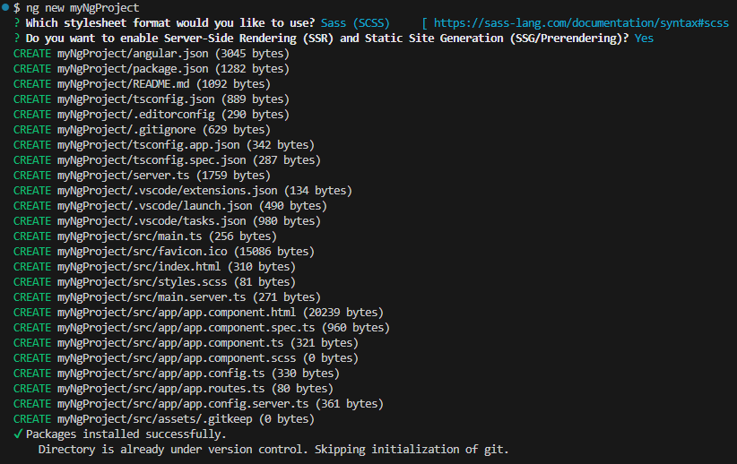
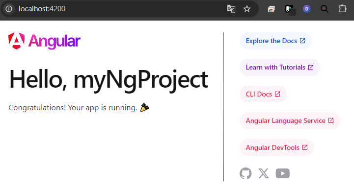

前言
開發了幾年了Angular專案，對於Angular還是有很多不了解的地方，希望可以透過寫文章，把自己學到的東西記錄下來。
一、環境建置
安裝以下
VSCODE - https://code.visualstudio.com/download
之後我們開發程式用的工具nvm
管理Node.js版本的工具
windows: https://github.com/coreybutler/nvm-windows/releases/download/1.1.12/nvm-setup.exemac: 請看這篇 安裝 nvm 環境，Node.js 開發者必學
打開 VSCODE ，點擊左上角 File -> Open Folder… -> 選擇一個想要放程式的資料夾
確認要使用的
Node.js版本
前往[Angular官網] (https://angular.dev/installation#prerequisites)
目前的版本為Node.js - v^18.9.1 or newer安裝
Node.js打開終端機: 點擊左上角 View -> Terminal ，或是按下Ctrl + ` (Esc下面那顆)
1
nvm install 18.9.1
安裝完之後使用此版本
1
nvm use 18.9.1
安裝
yarn我比較習慣使用
yarn，如果想使用npm也可以跳過此步驟。1
npm install --global yarn
安裝
angular/cli1
yarn add -g @angular/cli
二、開始建立第一個Angular專案
在Terminal輸入以下
1 | ng new myNgProject |
會看到以下選項
1 | ? Which stylesheet format would you like to use? |
我選SCSS
1 | ? Do you want to enable Server-Side Rendering (SSR) and Static Site Generation (SSG/Prerendering)? (y/N) |
比較少做SSR專案，想說試試看，所以我輸入y
啟動開發伺服器
1 | yarn start |
可以對著http://localhost:4200/ 使用Ctrl+滑鼠點擊，就可以直接前往頁面。
會看到以下畫面，就算完成今天的課程了。
小結與下一步
總結：經過以上的步驟，相信大家都成功建立了一個Angular專案，但這只是個開始，接下來會一步一步的把它慢慢改造，也順便練習一些Angular的技巧與基本概念。